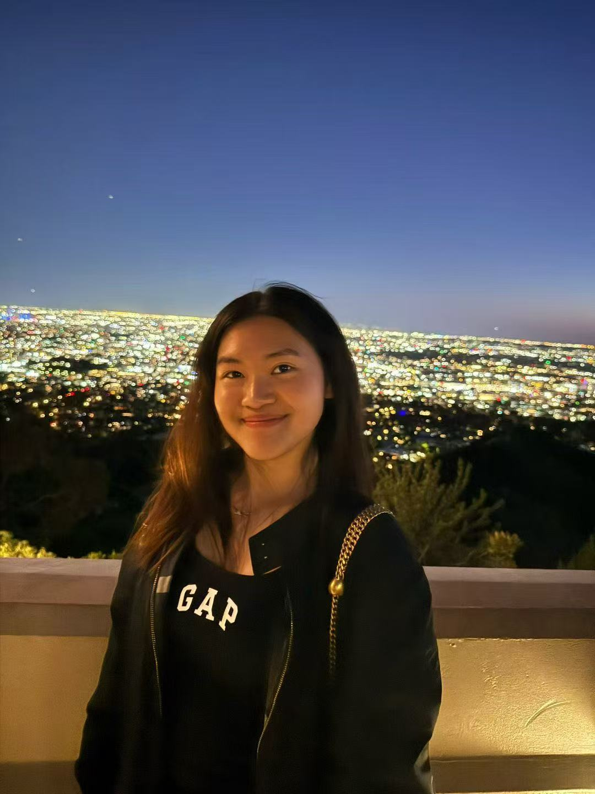

Extract 01
“Film is a way for me to tell the story and the message I want to share, but also through visuals that people can see and feel connected to.”
— On why she loves film

Chloe Liu is a freshman exploring film and media at WashU. Having grown up between countries, she approaches storytelling through a deeply personal and cross-cultural lens. Her work often reflects on movement, memory, and the shifting meaning of home.
| Major | Film & Media Studies |
| Year | Freshman |
| Focus | Directing & Visual Storytelling & Media |
| Interview Length | ~20 minutes |
| Interview Format | In-person @ Lien |
| Interview Date | 14th Mar 2026, 7pm |
Keywords
“Film is a way for me to tell the story and the message I want to share, but also through visuals that people can see and feel connected to.”
“Everyone has really fascinating stories to tell, and I want to share my own while also listening to others.”
“Living in different countries really broadened my perspective and helped me see things in new ways.”
“I was exploring what ‘home’ means to me, especially in moments like being in an airport, knowing everything is about to change.”
“I still want to tell stories, but through promotion and marketing, using visuals and media to connect audiences to those stories.”
How have living in different countries shaped the way you observe people and tell stories?
Living in different countries really broadened my perspective. It helped me become more open to meeting people and understanding different cultures. I think that’s what made me want to become a storyteller, not just to share my own experiences, but also to listen to other people’s stories, because everyone has something fascinating to tell.
When did you realize you were interested in media?
It started in high school when I took my first filmmaking class. I didn’t expect much, but my first film ended up being selected for a festival. That experience gave me a lot of confidence and made me feel like this was something I could actually pursue.
What makes film and media meaningful to you?
I love film because it allows me to tell stories that matter to me, like my immigration experience or promoting women in golf. It’s powerful because it combines visuals and emotion, people can see it, feel it, and connect to it in a deeper way.
What makes visual storytelling powerful compared to writing?
I think editing and framing are what make it powerful. The way you arrange clips, the pacing, and what you choose to show first all shape how the audience feels. There’s a lot of intention behind every decision.
How do you decide what the audience should focus on?
For documentaries, I focus on the message, what I want the audience to learn or think about afterward. For creative films, it’s more open. I like that audiences can interpret things in their own way.
What does your creative process look like?
It starts with an idea, but you also have to think about resources like time, budget, and people. Then comes scripting, planning shots, organizing logistics, filming, and finally editing, which is my favorite part. It usually takes multiple revisions before it feels complete.
How do you deal with getting stuck creatively?
Sometimes I just take a break and come back later. Setting my own deadlines also helps, because filmmaking doesn’t always have strict timelines, you have to motivate yourself to keep going
How do your roles in photography, writing, and marketing influence each other?
They’re all connected. Photography helps with visual composition in film, and marketing teaches you how to present content effectively. Even short-form videos like TikToks combine storytelling and visual skills.
How do you adjust your visual approach for different formats?
It really depends on the purpose. For example, sports photography needs a fast shutter speed to capture motion, while TikTok videos focus more on creativity and grabbing attention. You have to understand what works best for each medium.